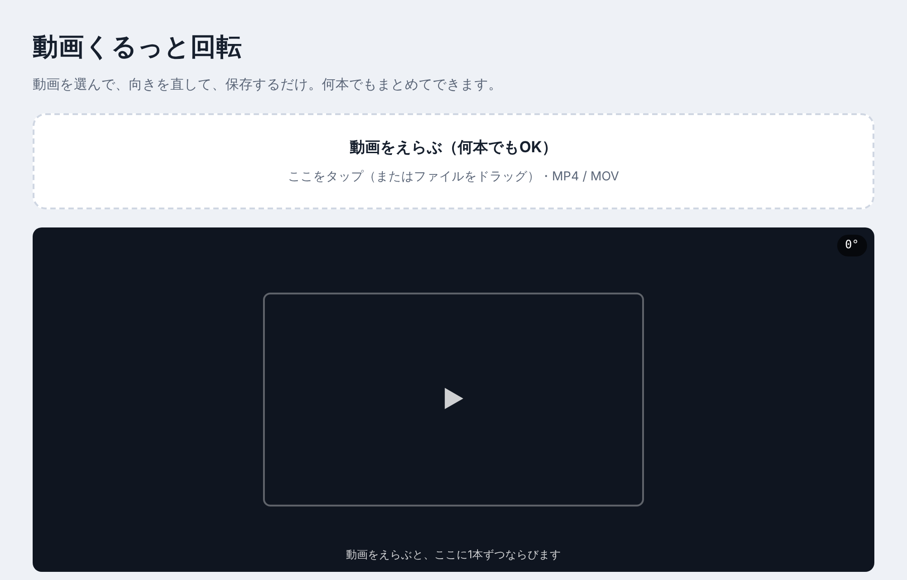
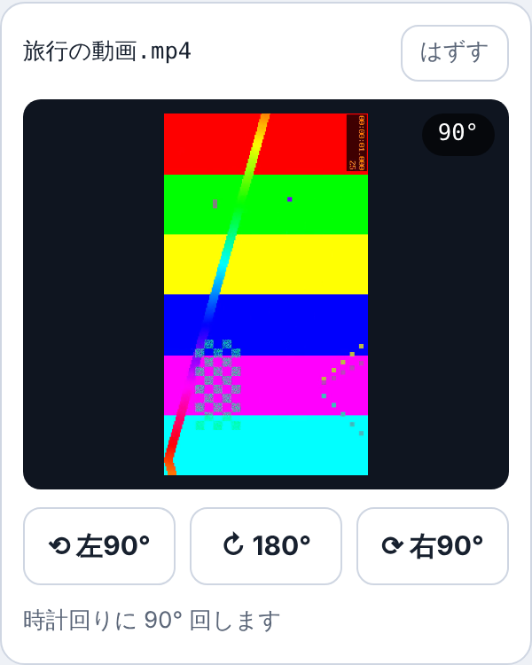
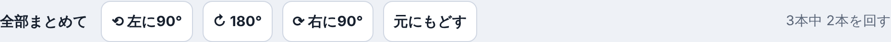
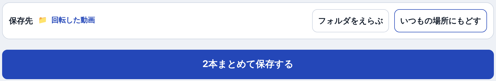
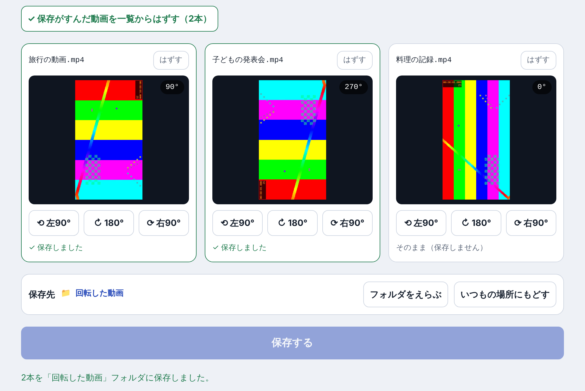

メルマガ「平日30分のAI創作ログ」登録者限定プレゼント
横になった動画の向きを直して、保存するだけのアプリです。
平日30分のAI創作ログ
忙しい会社員のための、AI創作の手順書
発行：なぎかぜ
メルマガ「平日30分のAI創作ログ」にご登録いただき、ありがとうございます。なぎかぜです。
このメルマガでは、仕事で忙しい会社員でも、平日の30分でAIを使った創作を進められるように、実際にやっている手順をそのままお届けしています。
登録のお礼に、動画の向きを直すアプリ「動画くるっと回転」をお贈りします。スマホで撮った動画が、パソコンで見たら横になっていた。そんなときに、向きを直して保存するだけのシンプルなアプリです。
じつはこのアプリも、AIと一緒に作りました。「こういう道具がほしい」とAIに伝えて、少しずつ形にしていったものです。こうした作り方も、メルマガでお話ししていきます。
これから、どうぞよろしくお願いします。
なぎかぜ
| パソコン | Windows か Mac |
|---|---|
| ブラウザ | Chrome か Edge がおすすめです。Safari や Firefox でも使えますが、保存先のフォルダは選べません。 |
| 動画の形式 | MP4 か MOV（スマホで撮った動画は、たいていどちらかです） |
| インターネット | いりません |
ダウンロードした ZIP ファイルを、ふつうのフォルダに戻します。
展開しないまま開くと、うまく動かないことがあります。
展開したフォルダの中の「動画くるっと回転.html」をダブルクリックします。ブラウザでアプリが開きます。
Chrome や Edge 以外で開いてしまったときは、ファイルを右クリック →「プログラムから開く」（Mac は「このアプリケーションで開く」）→ Chrome か Edge を選んでください。
「動画をえらぶ（何本でもOK）」を押して、向きを直したい動画を選びます。何本でもまとめて選べます。動画のファイルを、この枠の中にドラッグして入れることもできます。

動画ごとに、ボタンで向きを変えます。押すたびに、画面の動画も一緒に回ります。右上の数字が、いま回している角度です。

全部の動画を同じ向きに回したいときは、上にある「全部まとめて」のボタンが便利です。

「フォルダをえらぶ」を押して、保存したいフォルダを選びます。ブラウザに「書き込みを許可しますか？」と聞かれたら、「許可」を押してください。選ばないときは、いつもの「ダウンロード」フォルダに保存されます。

選んだフォルダは、アプリを閉じると忘れます。次に使うときは、もう一度選んでください。
「保存する」を押すと、回した動画だけが保存されます。保存が終わった動画は、枠が緑色になります。
保存されるファイルの名前は、元の名前のうしろに「_rotated」がついたものです。
例：旅行の動画.mp4 → 旅行の動画_rotated.mp4
終わった動画は「✓ 保存がすんだ動画を一覧からはずす」で、一覧からまとめて消せます。1本だけ消すときは、動画の右上の「はずす」を押します。

元の動画は書きかえません。新しいファイルとして保存するので、元の動画もそのまま残ります。
くわしくは、同じフォルダの「利用ルール.txt」を読んでください。
まわりの人にすすめたいときは、アプリではなく、メルマガ「平日30分のAI創作ログ」を紹介してもらえるとうれしいです。
発行：なぎかぜ